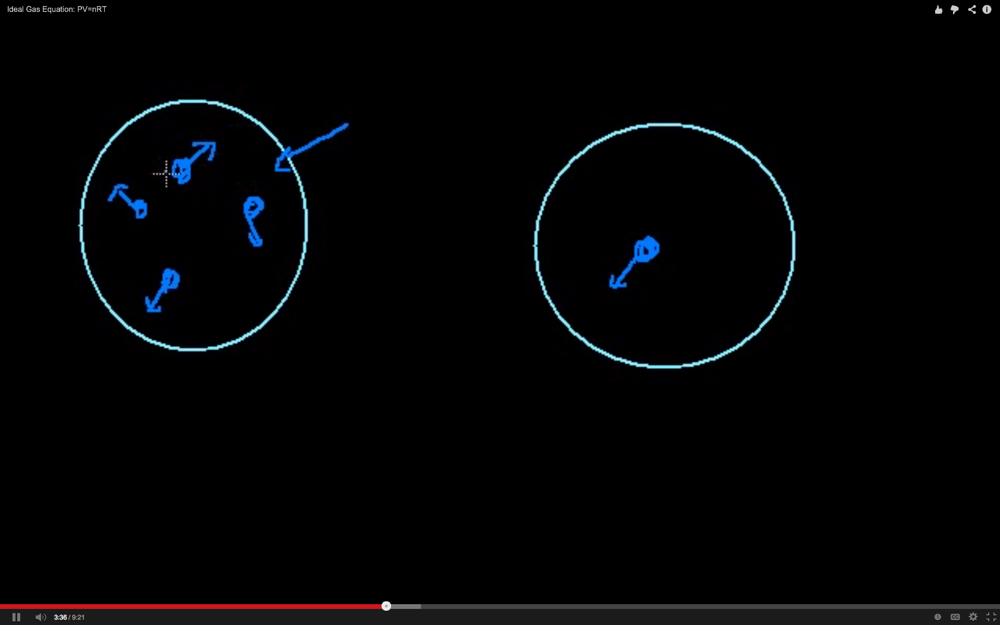
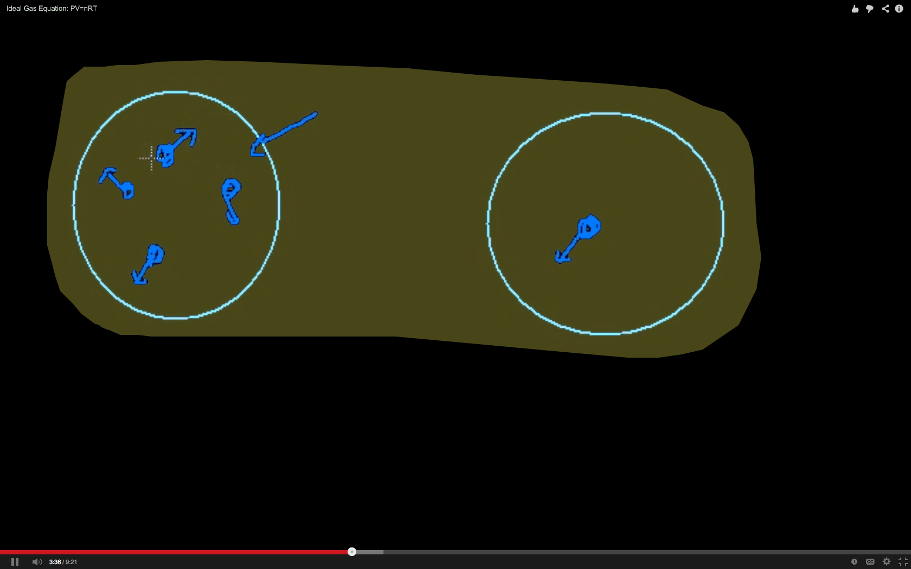
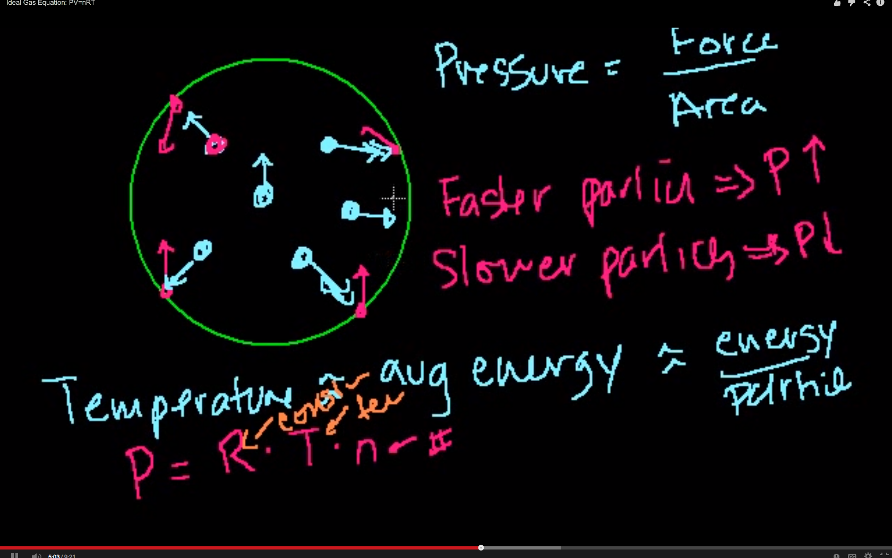
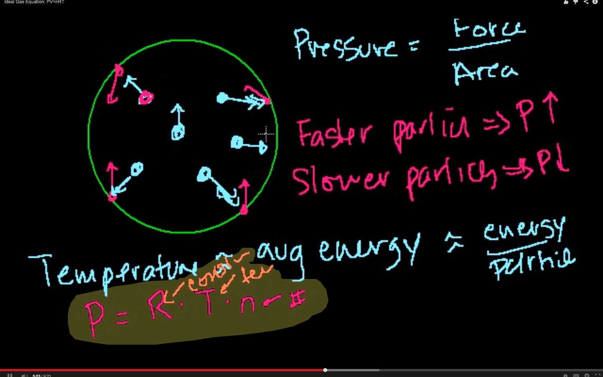
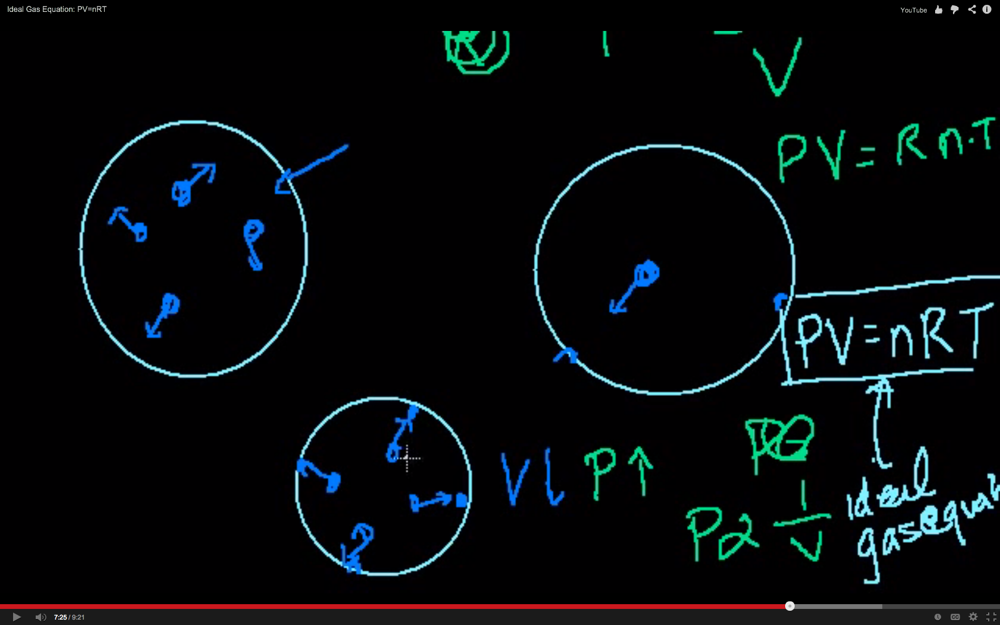
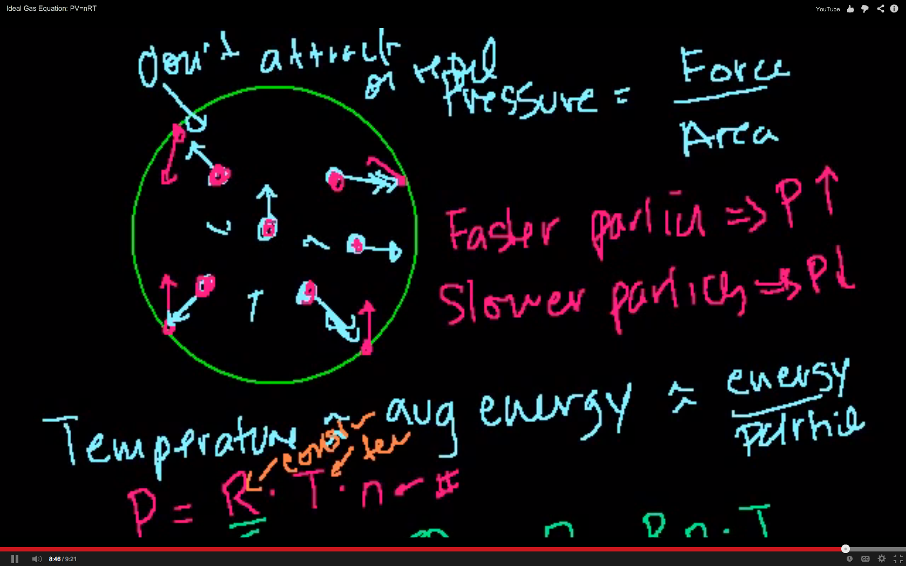
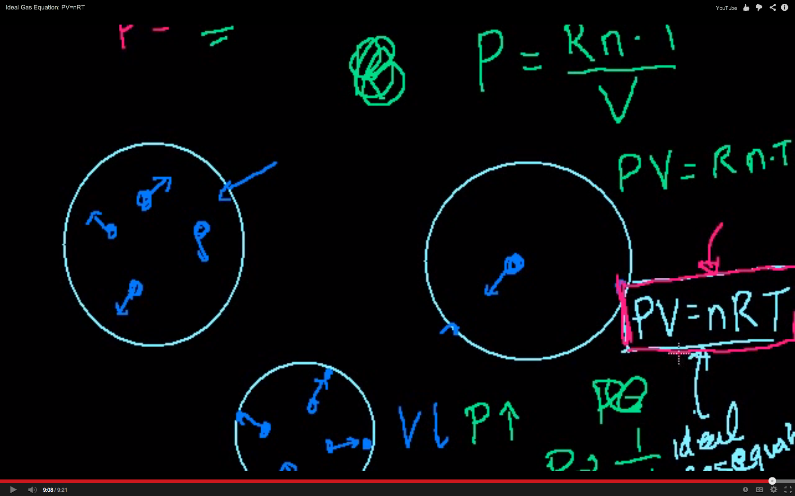

Topic: Definition of Pressure as Force Per Area
Time: 01:12
Transcript
Let's say I have a balloon
and in that balloon i have a bunch of particles bouncing around
they're gas particles
so they're floating freely
and they all have, they each have some velocity
some kinetic energy
and what I care about
what I care... let me just draw a few more
what I care about is the pressure that is exerted
on the surface of the balloon
so I care about the pressure
and what's pressure? it's force per area
force per area
so the area here, you can think of it as
the inside surface of the balloon
and what's going to put force,
what's going to apply force to that?
at any given moment i only drew what, 6 particles here
but in a real balloon you would have
you know, gazillions of particles, you know
we could talk about how large, but more particles
than you could really, probably imagine
but at any given moment some of those particles
are bouncing off the wall of the container
that particle is bouncing there, this particle
is bouncing there, this guy's bouncing like that
and when they bounce, they apply a force to the
container, an outward force, that's what keeps
the balloon blown up.
Topic: Temperature and Average Energy Per Particle
Time: 02:43
Transcript
So let's think about what the pressure
is going to be dependent on.
So first of all the pressure, the faster these
particles move, the higher the pressure, right?
Faster particles
faster particles would imply pressure would go up
right? slower particles you're gonna be bouncing
into the container less
and when you do bounce into the container
there is going to be less of a ricochet,
or less of a change in momentum
so slower particles
you're gonna have pressure go down
now it's practically impossible to measure
the kinetic energy, or the velocity
or the direction of each individual particle
as especially you have gazillions of them
in the balloon
so what we do is we think of
the average energy of the particles
and the average energy of the particles
you might say oh, Sal's about to introduce us
to a new concept
well I might, well it's a new of looking at a
probably very familiar concept to you
and that's temperature
temperature can and should be viewed
as the average energy of the particles in the system
so i'll put a little squiggly line
cause it's, you know, there's a lot of ways to
think about.. Average energy
or, you know... some, and mostly kinetic energy
right? because these particles are moving and bouncing
the higher the temperature, the more
the faster that these particles move
and the more that they're going to
bounce into the side of the [sic]particle
into the side of this container
but temperature is average energy
it tells us energy, energy per particle
|  |  |
| Topic: Number of Particles | |
| Time: 03:50 | Time: 04:59 |
| right, if you wanted to know the total, so you know obviously if we only had one particle in there with super high temperature that's going to have less pressure then if we have a million particles in there let me draw that if i have.. if i have.. let's take two cases right here one is: i have a bunch of particles with a certain temperature moving in their different directions and in the other example i have one particle right? and maybe they have the same temperature on average they have the same kinetic energy the kinetic energy per particle is the same cleary this one is going to be applying more pressure to its container cause at every given moment more of these particles are gonna be bouncing off the side then in this example, this guy is gonna bounce —bam— and gonna go and move and bounce bam so he's gonna be applying less pressure even though his temperature might be the same because temperature is kinetic energy, or you can view it as kinetic energy per particle | or it's a way of looking at kinetic energy per particle so if we wanted to look at the total energy in the system, we would want to multiply the temperature times the number of particles and just since we are dealing on the molecular scale the number of particles can often be represented as moles, remeber, moles is just the number of particles so we're saying that pressure pressure, is well I'll say, it's proportional so it's equal to let's say, some constant let's call that R times (cause we've got to make all the units work out in the end I mean temperature's in Kelvin but we eventually want to get back to Joules so let's just say it's equal to some constant or it's proportional to temperature times the number of particles we could do that a bunch of ways but let's think of that in moles but if I say they're 5 mole particles there you know that's 5 times 6 times 10 to the 23 particles so this is a number of particles (n) this is the temperature (T) and this is just some constant (n) constant, right there. |
Topic: Volume
Time: 06:12
Transcript
now what else is the pressure dependent on?
we gave these two examples
obviously it's dependent on the Temperature
the faster each of these particles move,
the higher pressure it will have
it's also dependent on the number of particles
the more particles we have
the more pressure we'll have
what about the size of the container?
the volume of the container?
if we took this example, but we shrunk the container somehow maybe by pressing on the outside
so this container looked like this, but we still had the same four particles in it
the same four particles with the same average
kinetic energy, with the same temperature
so that number of particles is the same,
the temperature's the same
but the volume has gone down
now these guys are gonna bump into
the sides of the container more frequently
and there's less area, right?
so at any given moment, you have more force
and less area
so when you have more force and less area
the pressure's gonna go up
so when the volume went down
your pressure went up
so pressure is going to be, is going to be
we could say, we could say
pressure is inversely proportional to volume
so let's think about that
Topic: PV=nRT
Time: 06:51
Transcript
let's put that into our equation
we said that pressure
sorry, not ressure
pressure is proportional, and I'm just saying
some proportionality constant, let's call that R
to the number of particles times the temperature
(this gives us the total energy)
and it's inversely proportional to the volume
and so if we multiply both sides of this
times the Volume
we get the pressure, times the volume is proportional
to the number of particles times the temperature
and then you know
so PV is equal to R n t
and just to switch this around a little bit
|  |  |
| Topic: Explanation of Ideal Gas | |
| Time: 07:16 | Time: 08:45 |
Transcript: so it's in a form that you are more likely to see in your chemistry book, if we just switch the n and the R term you get P (pressure) times volume is equal to n (the number of particles you have) times some constant times temperature and this right here is the ideal gas equation ideal gas equation and hopefully makes some sense to you ideal gas (not not gass) equation they say ideal gas is based on this little mental exercise I did to come up with this i made some implicit assumptions when I did this one is I assumed, I essentially I assumed that that we are dealing with an ideal gas and so you say, what Sal, what is an ideal gas? an ideal gas, is one where the molecules they're not too concerned with each other they're just concerned with their own kinetic energy and bouncing off of the walls so they don't attract or repel each other don't attract or repel.... cause let's say they are attracted to each other then as you increased the number of particles, maybe they'd want to not go to the side maybe they'd all gravitate towards the center a little bit more if they did attract each other and if they did that, they would bounce into the walls less and the pressure would be a little bit lower so assuming that they don't attract or repel each other and we're also assuming that the actual volume of the individual particles are inconsequential which is a pretty good assumption because they're pretty small altough if you start putting a ton of particles into a certain volume then at some point, especially if they are big molecules it will start to matter in terms of their size but we're assuming that for the purposes of our mental exercise that the molecules have inconsequential volumes and they don't attract or repel each other and in that situation we can apply the ideal gas equation, right here.
 Topic: Conclusion and Introduction to Next Topic
Time: 09:18
Transcript
Now we've established the ideal gas equation
but we're like oh,oh what's R, how do I deal with it, and how do I do math problems
and solve chemistry problems with it
and how do the units all work out
we'll do all of that in the next video, where i will solve a ton of equations, or a ton of exercises
with the ideal gas equation
but the important thing, the important take away from this video
is just to have the intuition, as to why this actually does make sense
and frankly once you have this intuition, you should never forget it
you should be able to maybe even derive it on your own.